You said do not forget the proper sidewalks. The sidewalk surface was already your good concrete, but the KERB beside it was wearing the house-yard dirt pool and the LANE LINE was wearing blank asphalt, so the road had no line on it. Both now wear the tiles you approved on 7/14: pale concrete with the panel joints for the kerb, and the thirty-year washed white line for the lane. RUN tab, stand on any big road.IS THIS A DEALBREAKER? the 4x character, side by side
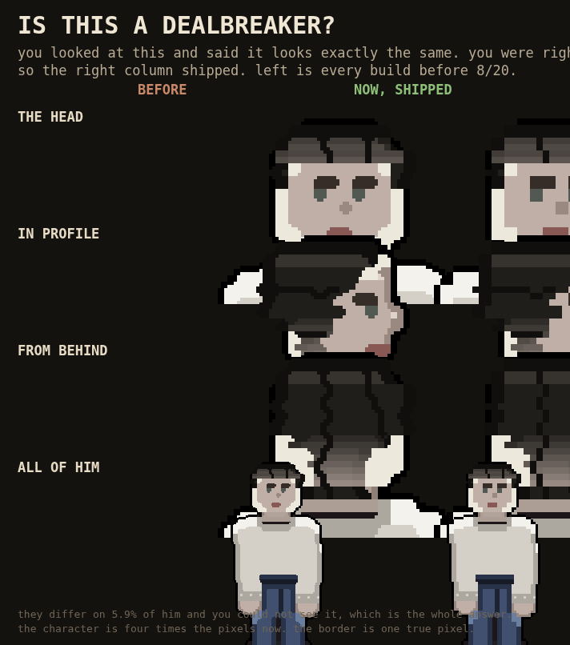
The whole 4x flip has been built and switched off since 8/16 for one reason, and it was my judgement, not yours: composing natively removes the corner-rounding the upscaler was doing for free, so the head comes out a bit more square, and that reads against your own no-straight-lines rule. You have never actually been shown it. Left is what you see today, right is what native 4x gives you, same art, same size, same clothes. They differ on 5.9% of him, 11% of that on the head. 40% of the difference is clothes and hair, which is code I fix for free; the rest is your paint. If you can live with the right column, 4x ships. LOOK tab.THE WARDROBE AT 4X: what four times the pixels buys the clothes
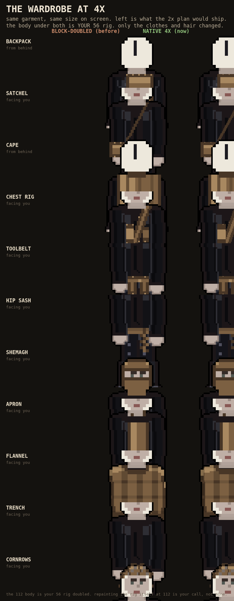
Twelve garments and two hairstyles, drawn twice at the same size on screen. LEFT is the way the 2x plan was going to ship them: generated at 56 and doubled into 2x2 squares, chunky cloth on a sharp body. RIGHT is the same garment composed natively, so a strap, a fold, a plaid and a cornrow each carry four times the detail. As of 8/20 the right-hand column is what the game draws: the rig is flipped and the wardrobe was made resolution-native the same day. CLOTHES tab is where you wear them; this picture lives in the LOOK tab.HIS SIGNALS, BACK ON THE INTERSECTIONS
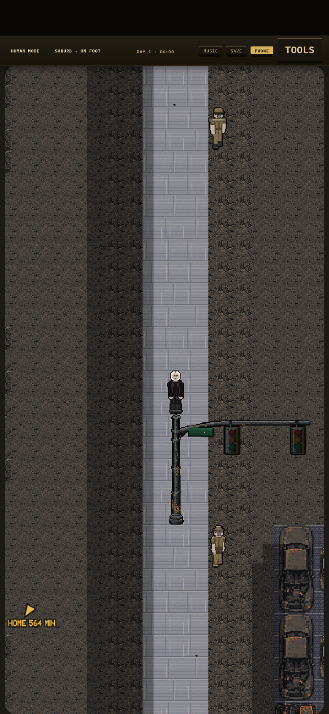
The 348-sprite traffic signal set you approved on 7/17 stopped appearing anywhere the day the roads started drawing themselves from their own modules. One flag meant BOTH "this cell is a road" AND "draw it the old way", so turning the second off turned the first off with it, and 274 real intersections lost their signals in silence. Measured at zero draws; here they are. RUN tab.GROUND YOU CANNOT SET YOUR FEET ON
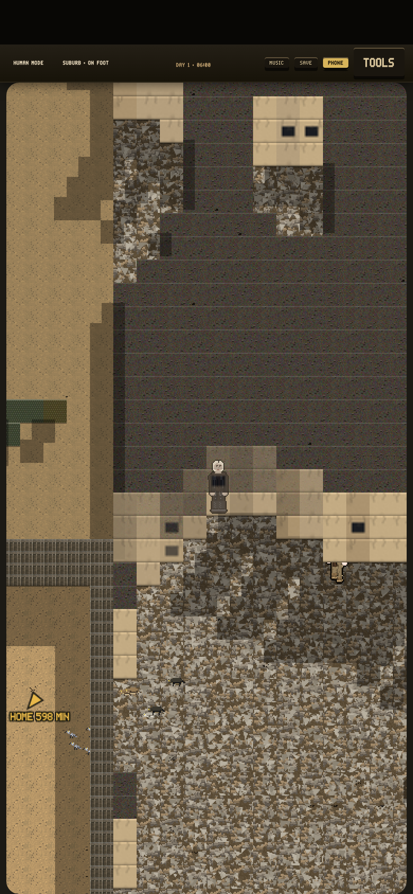
Loose ground: ballast, talus, rubble drift. Standing here you cannot brace, so everything physical hits you harder -- and the tip cuts both ways, because you can lead somebody else onto it. Until 8/20 this drew as flat colour and the only thing that told you it was dangerous was a line of text in the corner. Now the floor says it: broken chips, four values, no two pieces alike. RUN tab.THE HOLE: ground you can be thrown into
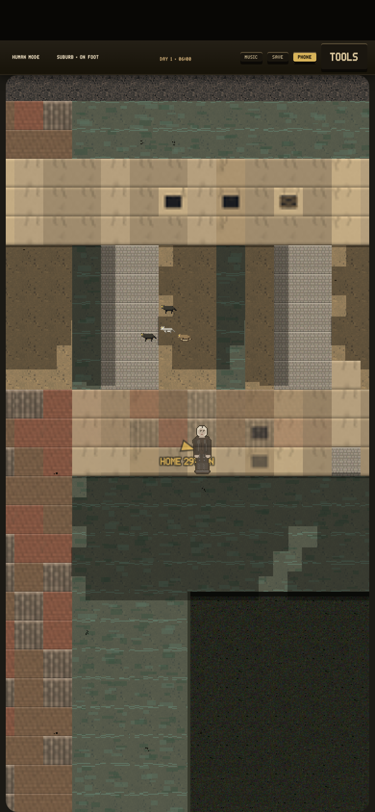
The crest of a quarry bench. Until 8/20 this was a WALL -- the deepest hole in the valley was something you bounced off. It is a void now: you cannot walk into it, it does not stop a body thrown at it, and being knocked in is fatal. Drawn darker than the rock it is cut from, because a drop reads as a floor at a different value. RUN tab.THEY LOST YOU
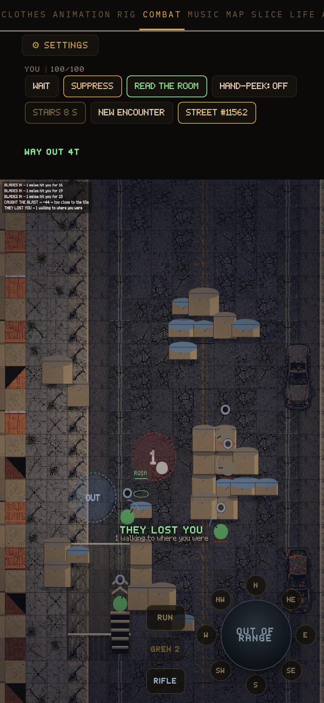
Put stone between you and them and the guns do not miss, they turn OFF. One thing decides it -- whether a man can actually see you -- and five separate systems ask it: whether he can hold a bead, whether he may shoot, where he walks, whether he runs for cover, and whether he shouts. A man who loses you walks to WHERE YOU WERE, not to where you are. And the one who can still see you tells everyone within eight tiles, so he is the one worth shooting first. COMBAT tab.THE CARD FITS AGAIN
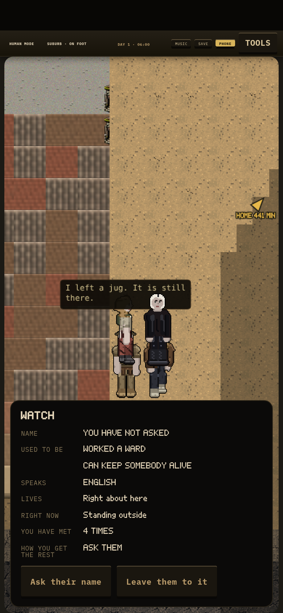
Five different systems write onto a person now and the card had quietly grown to 96 percent of your screen -- one more thing and it would have run off the bottom. So the stuff that is true of the WHOLE outfit and never changes (what they want, what they hold, what they pay in) collapses to one line the moment you have done anything for them, because you have already read it. Tap that line and it all comes back. Down to 84 percent. CITY tab, tap somebody you have helped.THEY ARE NOT WAITING
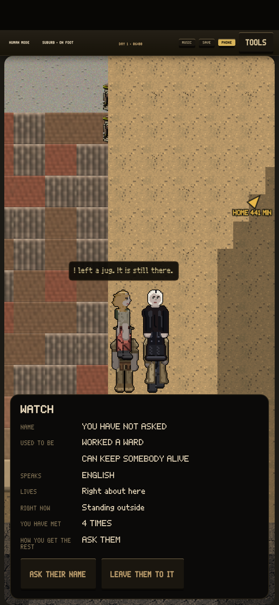
This is what the free thing was for. You took what the Cartel was offering three times, and now that they count you they are asking -- and they are not waiting for the polite gap between asks, because that gap is for people who do not owe them. Saying no here does not cost you one rung, it costs you one for every favour you took. CITY tab, tap a person.THE FIRST THING IS FREEThe other direction, finally. Some outfits give you something the first time you meet them, it costs you nothing, and that is exactly the part to worry about -- the card starts keeping a tally of what you have taken. Others hand you nothing until they count you, and then it spends the standing you built. One outfit gives nothing to anybody ever. CITY tab, tap a person.THEY ASK YOU BACK
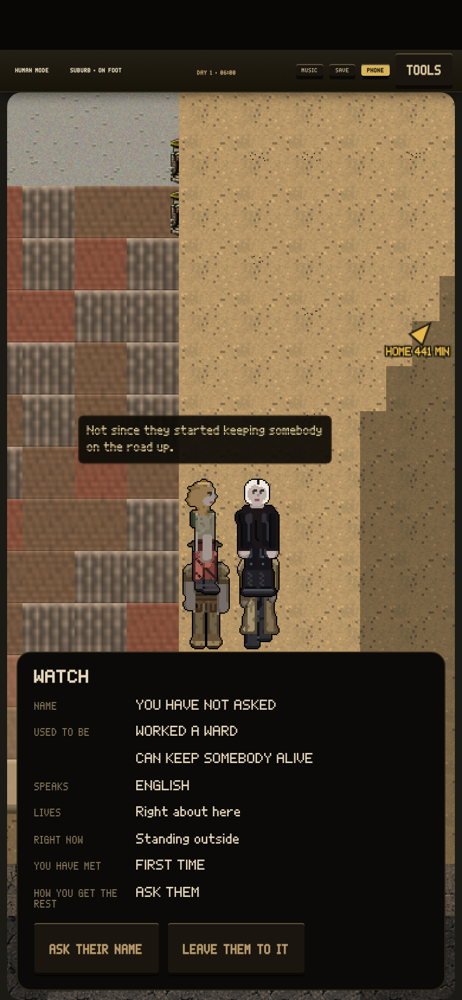
Once an outfit COUNTS you it starts asking, and what it asks for is the thing it already wanted. Saying yes buys you nothing -- it is the rent on being counted. Saying no drops you straight back below counted, and they remember which way you went. CITY tab, tap a person you have done favours for.THE WALL: turning up runs out of road
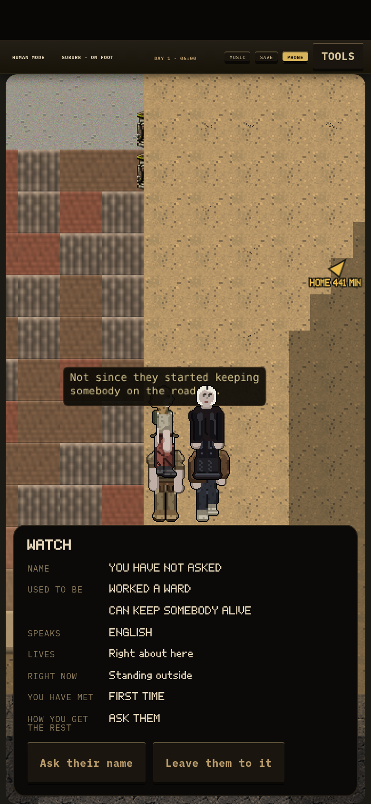
Walk up to anybody who runs with an outfit and this is their card. You have done what they want five times, and it says so: turning up gets you no further than USEFUL, and COUNTED is not for sale at any number of favours. The only button that passes it is saying out loud that you are with them. CITY tab, tap a person.A PIT DUG IN THE DIRT
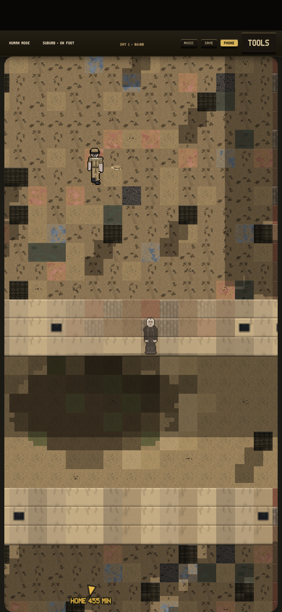
Somebody dug here. The ground is sunk where the fill settled, the pale heap beside it is the earth that never went back in, and the dark green is growing on what is under it. Bare dirt and sand generate these now. RUN tab.A CLUSTER: they died together
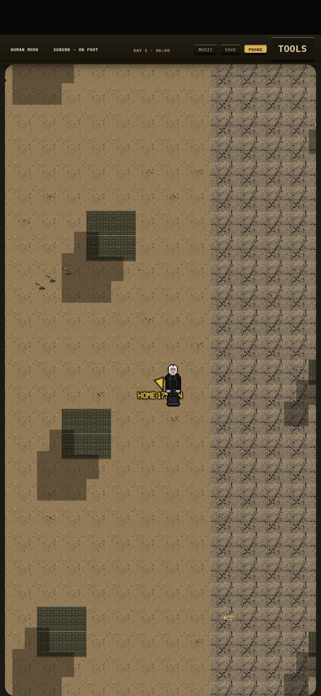
The dead come in groups now, not sprinkled one by one. This is what you find in an abandoned block. RUN tab.THE PIT: the cemetery
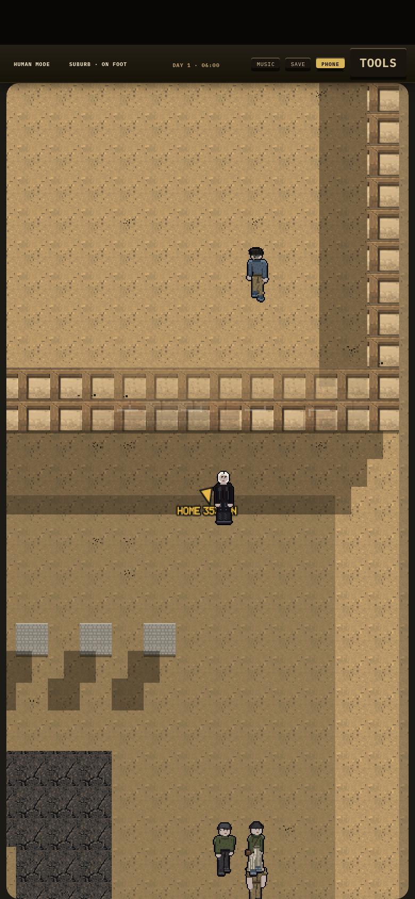
They stopped digging graves and dug one hole. The cemetery is a dumping pit now, about 34 bodies in a single heap. RUN tab.THE VISTA: the mountain overlook
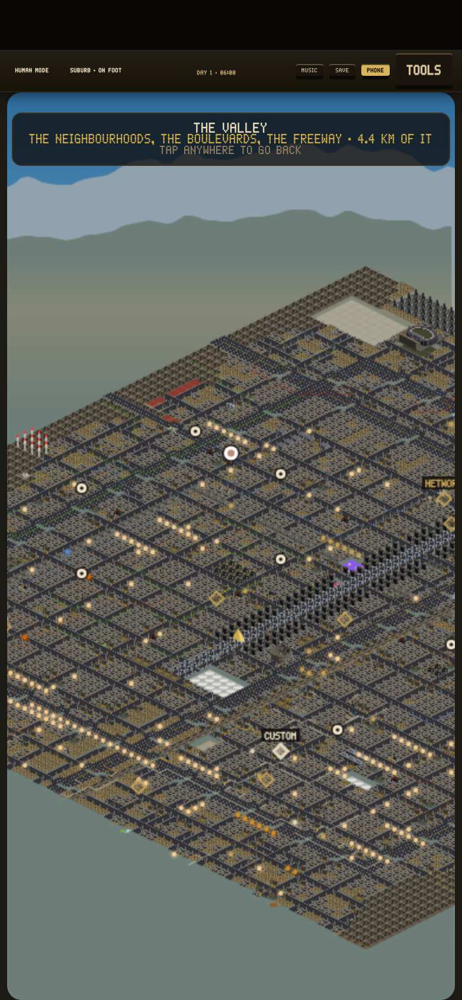
THE DEMO MONEY SHOT. Stand on the west rim and the whole valley is laid out below you, drawn by the valley view that already existed. RUN tab, on reaching the overlook.THE DEAD: how thick they lie
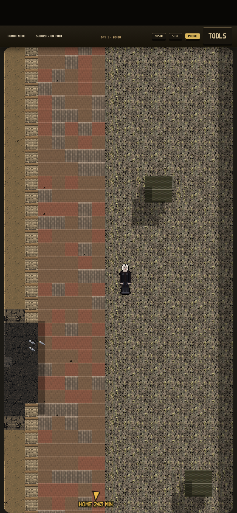
A wider view of the same ground, so the density reads. Too many, too few, or about right is the only call needed. RUN tab.THE DEAD: the walk-out
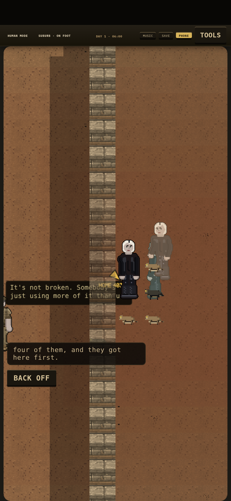
Open desert. The ones who walked out and did not make it, thin and scattered, no mummified bodies because nothing out here is sealed. RUN tab.THE DEAD: the road out
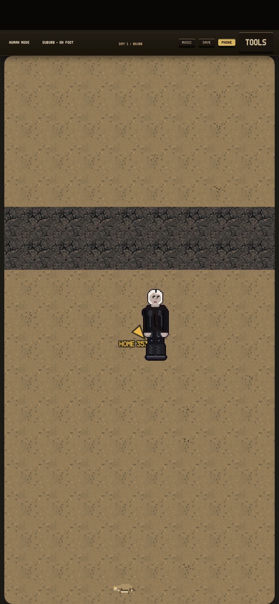
The exodus road. Remains on the asphalt where people stopped walking. RUN tab.THE DEAD: a suburban street
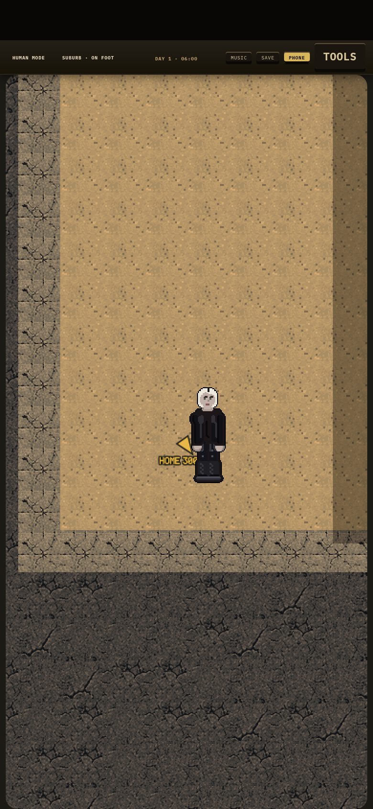
Bones lying in the open on a suburb street, bleached and scattered by ten years of scavengers. RUN tab.THE BLACK BORDER IS ONE PIXEL NOW
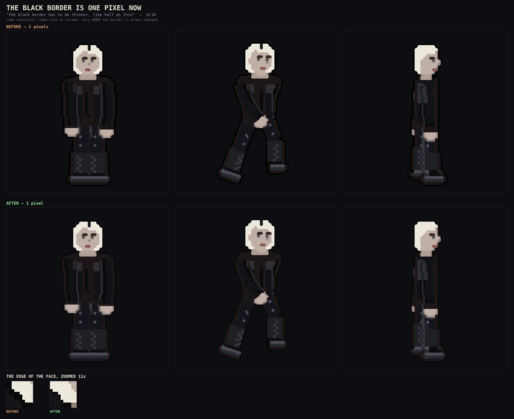
His 8/14 ask: "the black border has to be thinner, like half as thin." It was always drawn as ONE pixel -- but it was drawn on the 56 composition and then DOUBLED by the upscale that takes the frame to 112, so it reached the screen at two. It is now drawn after the upscale and arrives at one. Same body, byte for byte: 0 of ~18,000 non-border pixels changed. CHARACTER tab, and anywhere a person is drawn -- RUN, CITY, COMBAT.THE BLACK BORDER, IN THE GAME
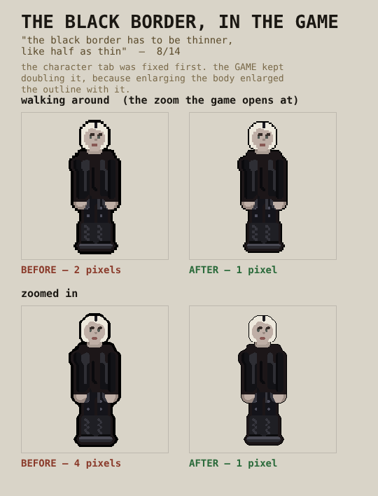
His 8/14 ask, finished where it counts. The CHARACTER tab got the thin outline first, and the GAME kept doubling it: the city enlarges every body on an integer ladder, so the one pixel came along for the ride and landed 2px thick walking around and 4px zoomed in. The border is now drawn AFTER the enlargement, at the size you actually see it, for the player and every neighbour. RUN tab (and CITY), anywhere a person is drawn.THE SIX PEOPLE ON YOUR STREET
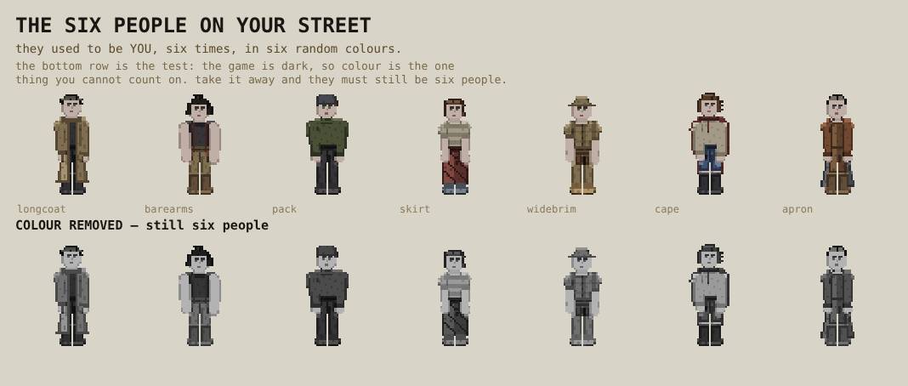
Your neighbours used to be YOU, six times, under six random colours -- same body, same clothes, only the hue changed, plus a durag on every third one. Strip the colour and they were six identical silhouettes, which matters because the valley goes DARK: night runs 19:00 to 06:00 and only about 4% of the map has live power, so colour is the one channel you cannot count on (06:00 itself is when night ENDS -- I had that wrong and it is corrected). They are six SHAPES now -- different bodies, different garments, all from the canon wardrobe. TWO OF THEM STILL MATCHED, and the fix was not a new garment: I measured all 202 clothes in the wardrobe for how much each one changes the outline, and the SHOULDER MANTLE moves it four times more than the gap I could not close. It was already in there. The backpack I had given one of them turns out to be invisible from the front, which is the direction you meet somebody in. The two closest neighbours are now three times further apart. The bottom row is the test. RUN tab, walk into a settlement.THE THIRTEEN OUTFITS
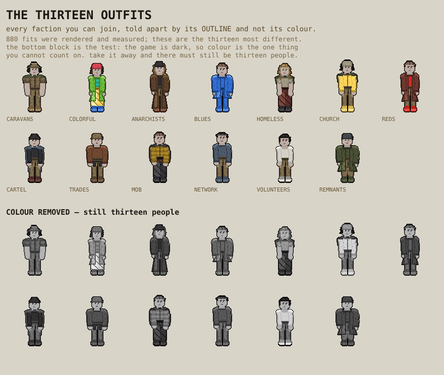
Every faction you can join, and you can tell them apart with the colour switched off. That matters because the valley goes DARK: night runs 19:00 to 06:00, and only about 4% of the map has live power, so most streets have no light even by day. Colour is the one channel you cannot count on. (I had been saying the demo OPENS in the dark -- it does not, 06:00 is exactly when night ends. Corrected.) These were not picked by eye: 880 fits were rendered out of clothes that already existed and the thirteen most different were kept, which is also how I found out the wardrobe holds exactly thirteen and not one more. The bottom block is the test. CHARACTER tab, THE THIRTEEN OUTFITS -- tap a body to turn it, hit COLOUR OFF to run the test yourself, WEAR IT to put one on and change it.TREATING A GUNSHOT WOUND
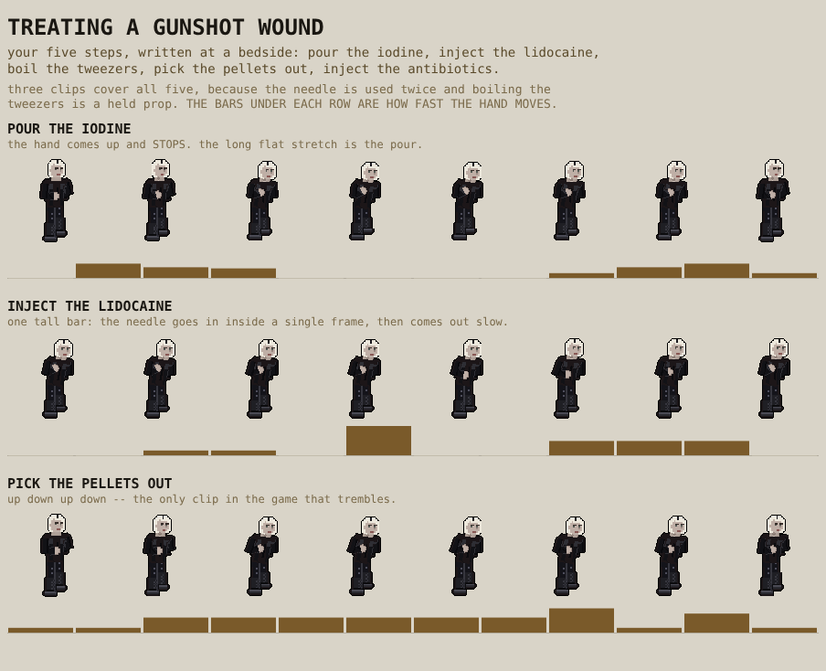
Your five steps, the ones you wrote at a bedside, as animations you can watch: pour the iodine, inject the lidocaine, pick the pellets out. Three clips cover all five because the needle gets used twice and boiling the tweezers is a held prop. All three put both hands in the same spot -- it is the same wound -- so what tells them apart is HOW THEY MOVE, and the bars under each row are the hand speed: the pour has a long flat stretch where the hand has stopped, the injection is one tall spike, and the tweezing shakes. ANIMATION tab, pick the clip. Also CHARACTER tab on the body.THE DRUNK WALK JUMPED EVERY TWO SECONDS
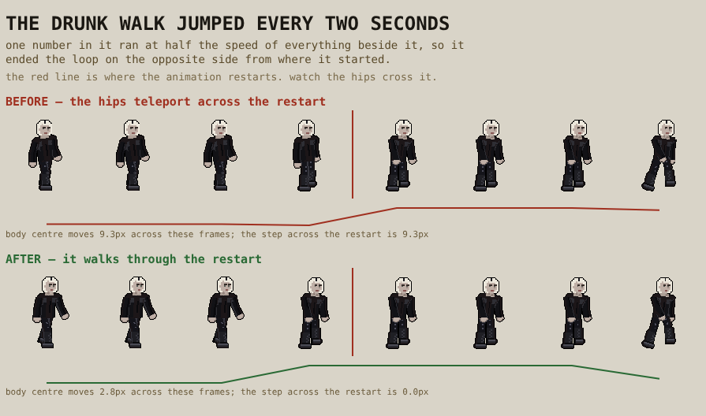
The drunk walk teleported sideways every two seconds and had done since it was written: one number in its maths ran at half the speed of everything beside it, so it ended each loop on the opposite side from where it started. The line under each row is the body's real centre, measured off the drawn pixels. Before, the whole 12.5px of movement happened in ONE frame, at the restart. After, the step across the restart is 0.3px. I found it by checking every animation in the game for the same defect -- 102 of the 103 were already fine, which is the more useful half of the answer. ANIMATION tab, pick drunk.WHEN A PERSON STOPS BEING SOMEBODY
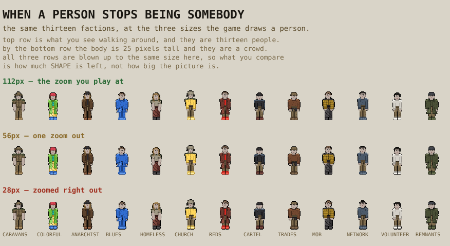
I proved the thirteen faction outfits tell each other apart -- and I proved it at ONE of the four sizes this game draws a person at. This is the other two. At the zoom you actually walk around in they are thirteen people. One zoom out they are already closer together than the gap that once made two neighbours read as the same guy, and zoomed right out the body is twenty-five pixels tall and they are a crowd. That is not something a wider coat fixes; it is a limit worth knowing. What it means in practice: anything you need to RECOGNISE from far away -- whose street this is, somebody you are looking for -- needs something other than the outline. CHARACTER tab for the outfits themselves; this is what they look like from the CITY.